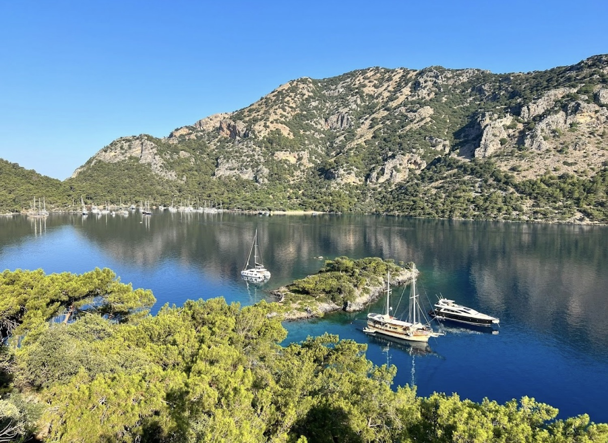
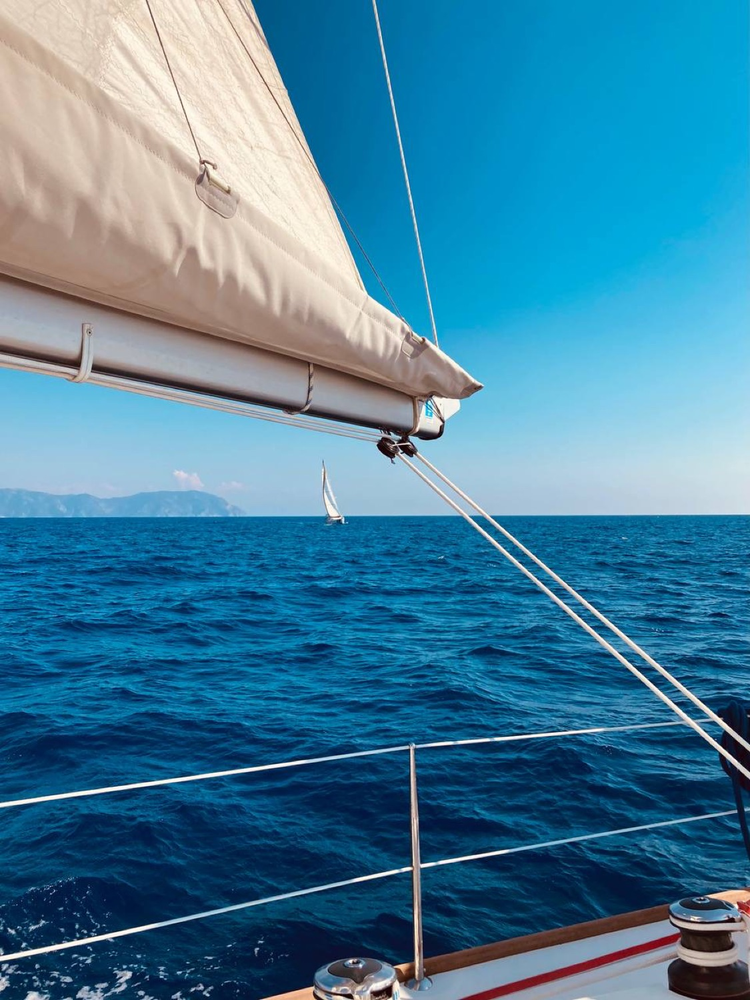
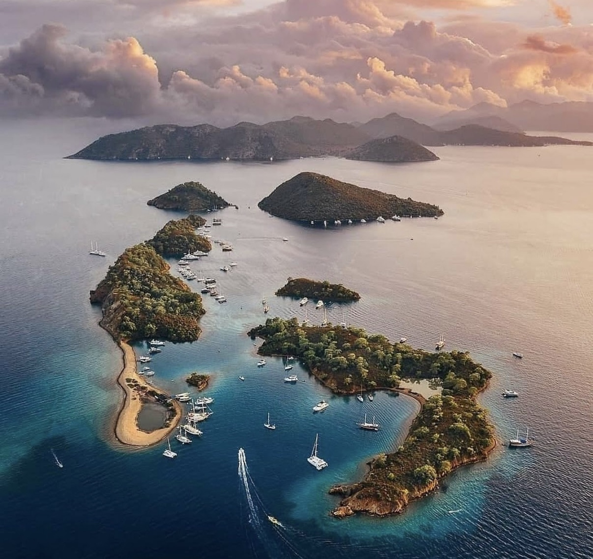
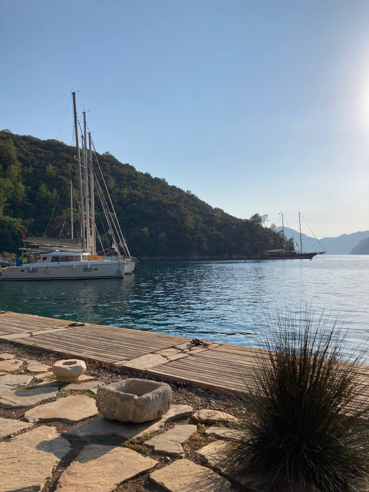
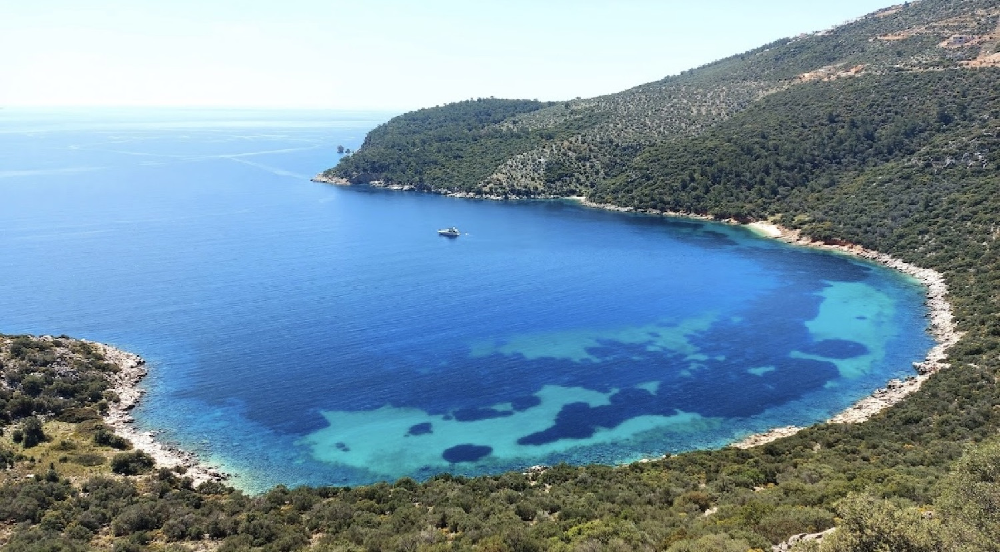
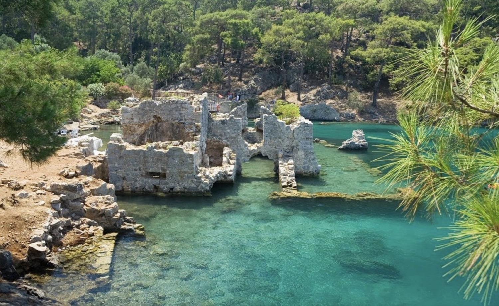
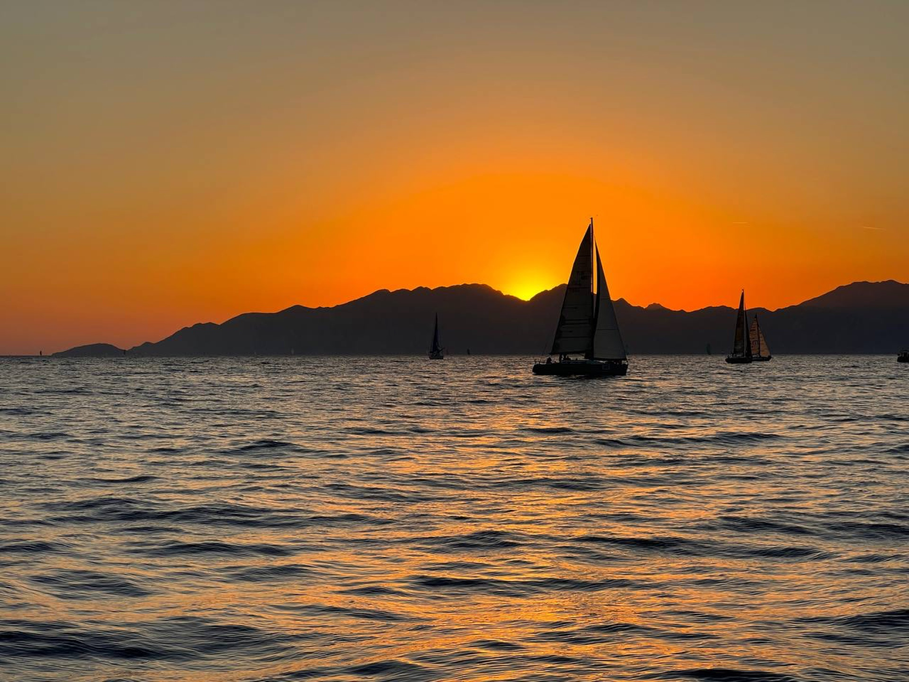

фото капитана
Игорь Магдеев
Шкипер · авторские маршрутыБолее 20 лет под парусами. Опыт маршрутов в Таиланде, Турции, Греции и России. Специалист по организации авторских яхтенных путешествий.
siesta — это авторские выходы под парусом для тех, кому важно не количество точек на карте, а качество тишины между ними. Небольшие команды, живой контакт с морем и два капитана, которые знают побережье наизусть.
Наведите и выберите — ниже раскроются детали программы.

Уединённые бухты, неспешные завтраки на палубе и полное единение с морем. Авторские маршруты для тех, кто ценит комфорт, хорошую еду и закаты в кругу близких. Мы не гонимся за расстоянием — мы даём морю распорядиться днём.

Станьте частью команды. Настоящие спортивные регаты: скорость, ветер и борьба за победу. Опыт не обязателен — два профессиональных капитана обучат вас управлению яхтой в реальных гоночных условиях, от постановки парусов до огибания знака.
Под каждую программу — свои нитки. Выберите маршрут: покажем опорные точки, а финальный план с датами пришлём при бронировании.
Открыть интерактивную картуСосновые бухты залива Гёджек и цепочка островов: короткие переходы, купания в бирюзовых заводях и стоянки у самого берега.
Дикий полуостров Датча: уединённые бухты, рыбацкие деревни и переходы подлиннее для тех, кто хочет уйти подальше от марин.
Короткие гонки в закрытой акватории залива: старты каждый день, разбор манёвров вечером. Хороший вход в регаты для новичков.
Длинная дистанция вокруг островов с ночными переходами и настоящей тактикой. Для тех, кто уже стоял на руле и хочет борьбы.
Несколько кадров из прошлых выходов — от рассветных стоянок до финишного галса.





На борту вас сопровождают два опытных капитана, создающие атмосферу уверенности, уюта и вдохновения.
Более 20 лет под парусами. Опыт маршрутов в Таиланде, Турции, Греции и России. Специалист по организации авторских яхтенных путешествий.
12 лет парусного опыта, призёр международных регат и шкипер международного уровня. Создаёт атмосферу лёгкости, заботится о безопасности и помогает гостям почувствовать радость морской жизни.
Вместе они сделают ваше путешествие тёплым, безопасным и незабываемым.
Мы — опытные капитаны и уже который месяц живём морем. Сейчас наш маршрут пролегает через солнечный Таиланд — и это просто магия: бирюзовая вода, тихие бухты, свежие фрукты и чувство свободы.
Мы любим делиться этой атмосферой и помогаем другим спланировать морские маршруты — будь то короткий отдых на яхте или настоящее путешествие по островам.
«Засыпали под плеск воды у борта, просыпались от запаха кофе с камбуза. Телефон так и остался разряженным до самой марины.» Игорь и Софа
Напишите нам — сверим даты, подберём борт и маршрут под вашу команду. Мест в сезоне немного, экипажи маленькие, и это принципиально.
Быстрее всего — в Telegram: ответим в течение дня, обсудим даты и подберём маршрут под вашу компанию.
Написать в TelegramПорт приписки — Гёджек, Турция. Навигация с мая по октябрь.